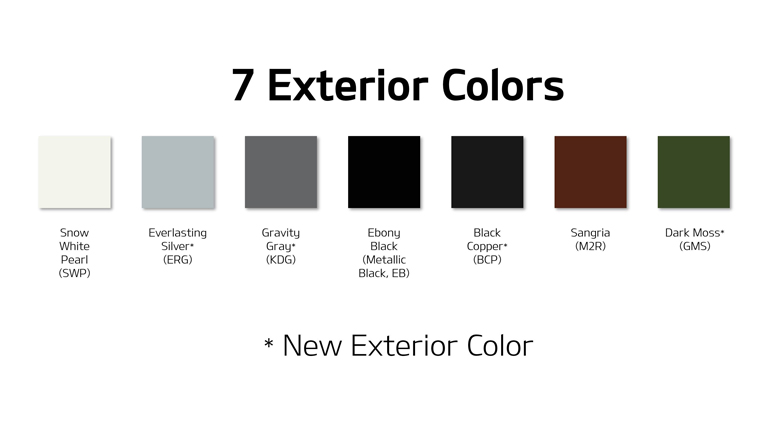

<section [@fade]="true">
    

    <div class="container">
      <h3>Strong. Bold. Commanding.</h3>

      <ul>
        <li>These are words midsize SUV customers often used while sharing their first impression of the Kia Telluride in customer clinics.</li>
        <li>In this exploration section, you’ll take a guided tour of the exterior design, dimensions, and performance that lend substance to the style.</li>
        <li>While you’re at it, we’ll conduct some back-to-back comparisons with the featured competitor to see who comes out on top. Let’s get started...</li>
      </ul>

      <h4>Signature Design Cues</h4>

      <p>How did the Kia design team pull off this broad-shouldered look? Here are a few signature design cues you can point to. Take a moment to get up close with each feature...</p>

      <div class="container py-5" *ngIf="!dataReady && !error.length">
        <mat-spinner class="mx-auto my-5"></mat-spinner>
      </div>

      <mat-accordion *ngIf="dataReady && !error.length">
        <mat-expansion-panel id="panel01" (opened)="scroll('panel01')">
          <mat-expansion-panel-header [collapsedHeight]="'auto'" [expandedHeight]="'auto'">
            Iconic “Tiger Nose” Grille w/ Hot Stamping Finish
          </mat-expansion-panel-header>
  
          <ng-template matExpansionPanelContent>
            

            <p>The Kia “tiger nose” grille is our brand’s defining feature. Yet, each vehicle’s tiger nose is unique! For Telluride, notice the large grille insert made of hot stamping mesh. The intention here was to give Telluride a luxurious and sporty feel, while accentuating its wide, commanding stance.</p>

            <mat-checkbox name="q0101" #q0101="ngModel" [(ngModel)]="exterior.q0101" (ngModelChange)="setCheck(q0101)">Hot tip: Design Line grades (S, SX) feature Satin Chrome grill surrounds. LX models offer an unpainted grille surround, EX grade offers Chrome surrounds.</mat-checkbox>

            <div class="form-group">
              <label for="q0102">What do you think?</label>
              <textarea class="form-control" id="q0102" rows="2" placeholder="Write something here..." name="q0102" #q0102="ngModel" [(ngModel)]="exterior.q0102" (ngModelChange)="setText(q0102)"(blur)="setTextBlur(q0102)"></textarea>
            </div>
          </ng-template>
        </mat-expansion-panel>
        <mat-expansion-panel id="panel02" (opened)="scroll('panel02')">
          <mat-expansion-panel-header [collapsedHeight]="'auto'" [expandedHeight]="'auto'">
            Vertical LED Headlamps
          </mat-expansion-panel-header>
  
          <ng-template matExpansionPanelContent>
            

            

            

            

            <p>The stacked vertical LED headlamps frame the mesh grille, providing a point of contrast that accentuates the Telluride’s athletic, wide stance.</p>

            <mat-checkbox name="q0201" #q0201="ngModel" [(ngModel)]="exterior.q0201" (ngModelChange)="setCheck(q0201)">Have the team in the front row activate the low beams, high beams, and turn signals.</mat-checkbox>

            <mat-checkbox name="q0202" #q0202="ngModel" [(ngModel)]="exterior.q0202" (ngModelChange)="setCheck(q0202)">The goal was to make a statement within the segment while adding unmistakable luxury.</mat-checkbox>

            <div class="form-group">
              <label for="q0203">What is your impression? Did the development team achieve its goal?</label>
              <textarea class="form-control" id="q0203" rows="2" placeholder="Write something here..." name="q0203" #q0203="ngModel" [(ngModel)]="exterior.q0203" (ngModelChange)="setText(q0203)"(blur)="setTextBlur(q0203)"></textarea>
            </div>
          </ng-template>
        </mat-expansion-panel>
        <mat-expansion-panel id="panel03" (opened)="scroll('panel03')">
          <mat-expansion-panel-header [collapsedHeight]="'auto'" [expandedHeight]="'auto'">
            Front / Rear Skid Plates (Silver Paint Finish on Design Line)
          </mat-expansion-panel-header>
  
          <ng-template matExpansionPanelContent>
            

            <p>The decorative front/rear skid plates hint at  Telluride’s SUV capabilities (and it looks pretty cool, too). Design Line models receive Silver Paint. LX = Unpainted.</p>
          </ng-template>
        </mat-expansion-panel>
        <mat-expansion-panel id="panel04" (opened)="scroll('panel04')">
          <mat-expansion-panel-header [collapsedHeight]="'auto'" [expandedHeight]="'auto'">
            7 Exterior Colors: Rich, Luminescent... Quietly Confident
          </mat-expansion-panel-header>
  
          <ng-template matExpansionPanelContent>
            

            <p>Seven exterior colors, including 4 all-new options, await; each designed to evoke an unmistakable air of “quiet confidence.” The state-of-the-art paint operation in West Point, GA ensures flawless quality and a rich, high-luminance pearl character.</p>

            <div class="form-group">
              <label for="q0401">Which exterior paint does your Telluride have? Is it an all-new color?</label>
              <textarea class="form-control" id="q0401" rows="2" placeholder="Write something here..." name="q0401" #q0401="ngModel" [(ngModel)]="exterior.q0401" (ngModelChange)="setText(q0401)"(blur)="setTextBlur(q0401)"></textarea>
            </div>

            <div class="form-group">
              <label for="q0402">Compare: How does the exterior paint finish compare to the featured competitor? Which appears more luxurious to your eye?</label>
              <textarea class="form-control" id="q0402" rows="2" placeholder="Write something here..." name="q0402" #q0402="ngModel" [(ngModel)]="exterior.q0402" (ngModelChange)="setText(q0402)"(blur)="setTextBlur(q0402)"></textarea>
            </div>
          </ng-template>
        </mat-expansion-panel>
        <mat-expansion-panel id="panel05" (opened)="scroll('panel05')">
          <mat-expansion-panel-header [collapsedHeight]="'auto'" [expandedHeight]="'auto'">
            Side
          </mat-expansion-panel-header>
  
          <ng-template matExpansionPanelContent>
            

            <p>Work with your partner to observe and/or discuss the following side profile design cues. Then, repeat this exercise with the competitor. Which side view makes more of a “power statement?”</p>

            <mat-checkbox name="q0501" #q0501="ngModel" [(ngModel)]="exterior.q0501" (ngModelChange)="setCheck(q0501)">Long, strong hood</mat-checkbox>

            <mat-checkbox name="q0502" #q0502="ngModel" [(ngModel)]="exterior.q0502" (ngModelChange)="setCheck(q0502)">Longest wheelbase in segment</mat-checkbox>

            <mat-checkbox name="q0503" #q0503="ngModel" [(ngModel)]="exterior.q0503" (ngModelChange)="setCheck(q0503)">Wheel arches pushed outward to the edges</mat-checkbox>
          </ng-template>
        </mat-expansion-panel>
        <mat-expansion-panel id="panel06" (opened)="scroll('panel06')">
          <mat-expansion-panel-header [collapsedHeight]="'auto'" [expandedHeight]="'auto'">
            Rear Design Cues
          </mat-expansion-panel-header>
  
          <ng-template matExpansionPanelContent>
            

            <p>Now, turn your attention to these rear design cues. How does Telluride’s rear design stack up to the competitor?</p>

            <mat-checkbox name="q0601" #q0601="ngModel" [(ngModel)]="exterior.q0601" (ngModelChange)="setCheck(q0601)">Modern and refined aesthetics</mat-checkbox>

            <mat-checkbox name="q0602" #q0602="ngModel" [(ngModel)]="exterior.q0602" (ngModelChange)="setCheck(q0602)">Rear vertical LED to enhance perceptionof luxury and substance</mat-checkbox>

            <mat-checkbox name="q0603" #q0603="ngModel" [(ngModel)]="exterior.q0603" (ngModelChange)="setCheck(q0603)">Skid plate design with premium silver finish hints at SUV capability</mat-checkbox>
          </ng-template>
        </mat-expansion-panel>

        <h4>First Impressions</h4>

        <mat-expansion-panel id="panel07" (opened)="scroll('panel07')">
          <mat-expansion-panel-header [collapsedHeight]="'auto'" [expandedHeight]="'auto'">
            Longest Wheelbase in Segment = Muscular Dimension
          </mat-expansion-panel-header>
  
          <ng-template matExpansionPanelContent>
            

            <p>Telluride has the longest wheelbase in its competitive set. This is significant&mdash;and intentional: By pushing its wheels further out to its corners than the competition, the Kia design achieved an athletic, muscular stance that makes a strong statement (and enhances interior spaciousness).</p>

            <mat-checkbox name="q0701" #q0701="ngModel" [(ngModel)]="exterior.q0701" (ngModelChange)="setCheck(q0701)">Comparison: Did you know that Exterior Design appeal is one of the top reasons customers buy?</mat-checkbox>

            <mat-checkbox name="q0702" #q0702="ngModel" [(ngModel)]="exterior.q0702" (ngModelChange)="setCheck(q0702)">At first glance, does Telluride stand out from the typical midsize SUV fare you’ve seen?</mat-checkbox>

            <div class="form-group">
              <label>Stand back and take a good look at Telluride’s overall profile... then repeat this exercise with the competitor. If you were in the design clinic, which vehicle makes a stronger statement&mdash;the Telluride or the featured competitor?</label>
              <mat-radio-group name="q0703" #q0703="ngModel" [(ngModel)]="exterior.q0703" (ngModelChange)="setRadio(q0703)">
                <mat-radio-button value="Telluride">Telluride</mat-radio-button>
                <mat-radio-button value="Competitor">Competitor</mat-radio-button>
                <mat-radio-button value="Tie">It’s a Tie</mat-radio-button>
              </mat-radio-group>
            </div>
          </ng-template>
        </mat-expansion-panel>
        <mat-expansion-panel id="panel08" (opened)="scroll('panel08')">
          <mat-expansion-panel-header [collapsedHeight]="'auto'" [expandedHeight]="'auto'">
            “Tale of the Tape” Conversation Points
          </mat-expansion-panel-header>
  
          <ng-template matExpansionPanelContent>
            <p>Sure, Telluride's size is impressive, but don’t be fooled: its dimensions are ideally suited for its competitive segment. Here are some conversational talking points for you...</p>
  
            

            <mat-checkbox name="q0801" #q0801="ngModel" [(ngModel)]="exterior.q0801" (ngModelChange)="setCheck(q0801)">Wheelbase: Longer wheelbase than competitive set (= stability and spaciousness!)</mat-checkbox>

            <mat-checkbox name="q0802" #q0802="ngModel" [(ngModel)]="exterior.q0802" (ngModelChange)="setCheck(q0802)">Height: Taller than Highlander, shorter than Pilot, same as Explorer</mat-checkbox>

            <mat-checkbox name="q0803" #q0803="ngModel" [(ngModel)]="exterior.q0803" (ngModelChange)="setCheck(q0803)">Width: Wider than Highlander, narrower than Pilot or Explorer</mat-checkbox>

            <mat-checkbox name="q0804" #q0804="ngModel" [(ngModel)]="exterior.q0804" (ngModelChange)="setCheck(q0804)">Overall length: Overall length is longer than Highlander or Pilot and same as Explorer</mat-checkbox>
          </ng-template>
        </mat-expansion-panel>
        <mat-expansion-panel id="panel09" (opened)="scroll('panel09')">
          <mat-expansion-panel-header [collapsedHeight]="'auto'" [expandedHeight]="'auto'">
            Put It All Together
          </mat-expansion-panel-header>
  
          <ng-template matExpansionPanelContent>
            <div class="form-group">
              <label for="q0901">As a team, answer this question: “Wow, Telluride looks really big. How does it compare to other midsize SUVs?”</label>
              <textarea class="form-control" id="q0901" rows="2" placeholder="Write something here..." name="q0901" #q0901="ngModel" [(ngModel)]="exterior.q0901" (ngModelChange)="setText(q0901)"(blur)="setTextBlur(q0901)"></textarea>
            </div>
          </ng-template>
        </mat-expansion-panel>

        <h4>“Two Track” Grade Strategy</h4>

        <h6>(Design Line and Convenience Line)</h6>

        

        <p>The five Telluride trims are segmented into two grades: the Design Line and Convenience Line. The idea here: simplify the ordering process and appeal to two unique customer preferences. Using the featured model, let’s take a visual tour of the <em>signature</em> exterior features <em>unique</em> to each grade.</p>

        <mat-expansion-panel id="panel10" (opened)="scroll('panel10')">
          <mat-expansion-panel-header [collapsedHeight]="'auto'" [expandedHeight]="'auto'">
            Design Line Visual Tour (S, SX, SX with Prestige Package)
          </mat-expansion-panel-header>
  
          <ng-template matExpansionPanelContent>
            <p>Key Selling Proposition: Ultimate Exterior Style &amp; Refinement</p>
  
            <p>Identifying Features (visually inspect each):</p>

            <mat-checkbox name="q1001" #q1001="ngModel" [(ngModel)]="exterior.q1001" (ngModelChange)="setCheck(q1001)">20" alloy wheels (SX &ndash; Black Sport, S &ndash; Machine Finished)</mat-checkbox>

            <mat-checkbox name="q1002" #q1002="ngModel" [(ngModel)]="exterior.q1002" (ngModelChange)="setCheck(q1002)">Captain’s Chairs (peek in the window!)</mat-checkbox>

            <mat-checkbox name="q1003" #q1003="ngModel" [(ngModel)]="exterior.q1003" (ngModelChange)="setCheck(q1003)">Exterior accent theme: Satin Chrome</mat-checkbox>

            <mat-checkbox name="q1004" #q1004="ngModel" [(ngModel)]="exterior.q1004" (ngModelChange)="setCheck(q1004)">Grille surrounds</mat-checkbox>

            <mat-checkbox name="q1005" #q1005="ngModel" [(ngModel)]="exterior.q1005" (ngModelChange)="setCheck(q1005)">Lower door garnish</mat-checkbox>

            <mat-checkbox name="q1006" #q1006="ngModel" [(ngModel)]="exterior.q1006" (ngModelChange)="setCheck(q1006)">Roof rails</mat-checkbox>

            <mat-checkbox name="q1007" #q1007="ngModel" [(ngModel)]="exterior.q1007" (ngModelChange)="setCheck(q1007)">Twin-tip Exhaust</mat-checkbox>

            <mat-checkbox name="q1008" #q1008="ngModel" [(ngModel)]="exterior.q1008" (ngModelChange)="setCheck(q1008)">Skid plate: Silver finish</mat-checkbox>
          </ng-template>
        </mat-expansion-panel>
        <mat-expansion-panel id="panel11" (opened)="scroll('panel11')">
          <mat-expansion-panel-header [collapsedHeight]="'auto'" [expandedHeight]="'auto'">
            Convenience Line Visual Tour (LX, EX)
          </mat-expansion-panel-header>
  
          <ng-template matExpansionPanelContent>
            <p>Key Selling Proposition: Value and Feature-Driven Customers</p>
  
            <p>Identifying Features (visually inspect each):</p>

            <mat-checkbox name="q1101" #q1101="ngModel" [(ngModel)]="exterior.q1101" (ngModelChange)="setCheck(q1101)">18" alloy wheels (EX &ndash; 18" Machine Finish Alloy)</mat-checkbox>

            <mat-checkbox name="q1102" #q1102="ngModel" [(ngModel)]="exterior.q1102" (ngModelChange)="setCheck(q1102)">8-passenger seating (60/40 split bench 2nd row)</mat-checkbox>

            <mat-checkbox name="q1103" #q1103="ngModel" [(ngModel)]="exterior.q1103" (ngModelChange)="setCheck(q1103)">Exterior accent <em>theme</em>: Chrome (EX)</mat-checkbox>

            <mat-checkbox name="q1104" #q1104="ngModel" [(ngModel)]="exterior.q1104" (ngModelChange)="setCheck(q1104)">Grille surrounds</mat-checkbox>

            <mat-checkbox name="q1105" #q1105="ngModel" [(ngModel)]="exterior.q1105" (ngModelChange)="setCheck(q1105)">Lower door garnish</mat-checkbox>

            <mat-checkbox name="q1106" #q1106="ngModel" [(ngModel)]="exterior.q1106" (ngModelChange)="setCheck(q1106)">Roof rails</mat-checkbox>

            <mat-checkbox name="q1107" #q1107="ngModel" [(ngModel)]="exterior.q1107" (ngModelChange)="setCheck(q1107)">Exhaust</mat-checkbox>
          </ng-template>
        </mat-expansion-panel>
        <mat-expansion-panel id="panel12" (opened)="scroll('panel12')">
          <mat-expansion-panel-header [collapsedHeight]="'auto'" [expandedHeight]="'auto'">
            Put It All Together
          </mat-expansion-panel-header>
  
          <ng-template matExpansionPanelContent>
            <div class="form-group">
              <label for="q1201">Which grade line would this customer prefer (Design or Convenience Line): <em>“We tend to be fairly practical with our vehicles. The big priority for me is 8-passenger seating for all the carpooling we do.”</em></label>
              <textarea class="form-control" id="q1201" rows="2" placeholder="Write something here..." name="q1201" #q1201="ngModel" [(ngModel)]="exterior.q1201" (ngModelChange)="setText(q1201)"(blur)="setTextBlur(q1201)"></textarea>
            </div>
          </ng-template>
        </mat-expansion-panel>

        <h4>Commanding Performance</h4>

        <p>Drivers in this segment aren’t chasing 0-60 times, but they <em>do</em> want a vehicle that inspires a feeling of confidence and capability. Of course, Telluride is ready to deliver. Let’s <em>level set</em> your understanding of Telluride’s powertrain packageand how it matches up to the competition.</p>

        <mat-expansion-panel id="panel13" (opened)="scroll('panel13')">
          <mat-expansion-panel-header [collapsedHeight]="'auto'" [expandedHeight]="'auto'">
            Engine Compartment Inspection
          </mat-expansion-panel-header>

          <ng-template matExpansionPanelContent>
            

            <p>Can you locate the following elements?</p>

            <mat-checkbox name="q1301" #q1301="ngModel" [(ngModel)]="exterior.q1301" (ngModelChange)="setCheck(q1301)">Hood latch</mat-checkbox>

            <mat-checkbox name="q1302" #q1302="ngModel" [(ngModel)]="exterior.q1302" (ngModelChange)="setCheck(q1302)">Oil level indicator / cap</mat-checkbox>

            <mat-checkbox name="q1303" #q1303="ngModel" [(ngModel)]="exterior.q1303" (ngModelChange)="setCheck(q1303)">Windshield washer cap</mat-checkbox>

            <mat-checkbox name="q1304" #q1304="ngModel" [(ngModel)]="exterior.q1304" (ngModelChange)="setCheck(q1304)">Battery terminals</mat-checkbox>
          </ng-template>
        </mat-expansion-panel>
        <mat-expansion-panel id="panel14" (opened)="scroll('panel14')">
          <mat-expansion-panel-header [collapsedHeight]="'auto'" [expandedHeight]="'auto'">
            3.8L V6 GDI
          </mat-expansion-panel-header>
  
          <ng-template matExpansionPanelContent>
            <p>Telluride’s state-of-the art engine checks all the boxes... an all-aluminum block for reduced weight and improved heat management, dual overhead cams with continuously variable valve timing for maximum power throughout the rev range, gasoline direct injection (GDI) for eye-opening power and ultra-low emissions, and even Atkinson Cycle timing for optimized fuel efficiency during relaxed highway cruising scenarios. As partners, talk through each of the following performance stats...</p>

            <mat-checkbox name="q1401" #q1401="ngModel" [(ngModel)]="exterior.q1401" (ngModelChange)="setCheck(q1401)">291hp @ 6,000rpm</mat-checkbox>

            <mat-checkbox name="q1402" #q1402="ngModel" [(ngModel)]="exterior.q1402" (ngModelChange)="setCheck(q1402)">262 lb.-ft. @ 5,200 rpm</mat-checkbox>

            <mat-checkbox name="q1403" #q1403="ngModel" [(ngModel)]="exterior.q1403" (ngModelChange)="setCheck(q1403)">Runs on 87 octane unleaded gasoline</mat-checkbox>

            <mat-checkbox name="q1404" #q1404="ngModel" [(ngModel)]="exterior.q1404" (ngModelChange)="setCheck(q1404)">FWD MPG: 20 city / 26 hwy / 23 comb.</mat-checkbox>

            <mat-checkbox name="q1405" #q1405="ngModel" [(ngModel)]="exterior.q1405" (ngModelChange)="setCheck(q1405)">AWD MPG: 19 city / 24 hwy / 21 comb.</mat-checkbox>

            <div class="form-group">
              <label for="q1406">Compare: How do these numbers stack up to your featured competitor?</label>
              <textarea class="form-control" id="q1406" rows="2" placeholder="Write something here..." name="q1406" #q1406="ngModel" [(ngModel)]="exterior.q1406" (ngModelChange)="setText(q1406)"(blur)="setTextBlur(q1406)"></textarea>
            </div>
          </ng-template>
        </mat-expansion-panel>
        <mat-expansion-panel id="panel15" (opened)="scroll('panel15')">
          <mat-expansion-panel-header [collapsedHeight]="'auto'" [expandedHeight]="'auto'">
            8-speed Automatic Transmission
          </mat-expansion-panel-header>
  
          <ng-template matExpansionPanelContent>
            <p>An intelligent and responsive 8-speed transmission is standard on every Telluride, helping to deliver outstanding performance, efficiency, and capability. Keep exploring to better understand the transmission’s full range of capabilities...</p>

            <div class="form-group">
              <label for="q1501">Can you determine how many gears the competitor has?</label>
              <textarea class="form-control" id="q1501" rows="2" placeholder="Write something here..." name="q1501" #q1501="ngModel" [(ngModel)]="exterior.q1501" (ngModelChange)="setText(q1501)"(blur)="setTextBlur(q1501)"></textarea>
            </div>
          </ng-template>
        </mat-expansion-panel>
        <mat-expansion-panel id="panel16" (opened)="scroll('panel16')">
          <mat-expansion-panel-header [collapsedHeight]="'auto'" [expandedHeight]="'auto'">
            Drive Mode
          </mat-expansion-panel-header>

          <ng-template matExpansionPanelContent>
            

            <p>Drive Mode seeks to inspire driver confidence by calibrating engine/throttle output and transmission shift points to achieve unique drive-performance characteristics.</p>

            <mat-checkbox name="q1601" #q1601="ngModel" [(ngModel)]="exterior.q1601" (ngModelChange)="setCheck(q1601)">Can you locate the controls in the 1<sup>st</sup> row (you may need to ask the Front Row team for help)?</mat-checkbox>

            <div class="form-group">
              <label for="q1602">What settings are available?</label>
              <textarea class="form-control" id="q1602" rows="2" placeholder="Write something here..." name="q1602" #q1602="ngModel" [(ngModel)]="exterior.q1602" (ngModelChange)="setText(q1602)"(blur)="setTextBlur(q1602)"></textarea>
            </div>

            <mat-checkbox name="q1603" #q1603="ngModel" [(ngModel)]="exterior.q1603" (ngModelChange)="setCheck(q1603)">Can you activate Snow Mode? (hint: Push the Drive Mode on the top of the dial)</mat-checkbox>

            <div class="form-group">
              <label for="q1604">How do these controls compare with the competitor?</label>
              <textarea class="form-control" id="q1604" rows="2" placeholder="Write something here..." name="q1604" #q1604="ngModel" [(ngModel)]="exterior.q1604" (ngModelChange)="setText(q1604)"(blur)="setTextBlur(q1604)"></textarea>
            </div>
          </ng-template>
        </mat-expansion-panel>
        <mat-expansion-panel id="panel17" (opened)="scroll('panel17')">
          <mat-expansion-panel-header [collapsedHeight]="'auto'" [expandedHeight]="'auto'">
            Downhill Brake Control (DBC)
          </mat-expansion-panel-header>

          <ng-template matExpansionPanelContent>
            

            <p>On a steep road, the transmission integrates with Telluride’s DBC, allowing drivers to maintain a constant speed as they descend a hill without any acceleration or brake input.</p>

            <div class="form-group">
              <label for="q1701">What type of story could you share to help a customer envision the benefit of DBC?</label>
              <textarea class="form-control" id="q1701" rows="2" placeholder="Write something here..." name="q1701" #q1701="ngModel" [(ngModel)]="exterior.q1701" (ngModelChange)="setText(q1701)"(blur)="setTextBlur(q1701)"></textarea>
            </div>
          </ng-template>
        </mat-expansion-panel>
        <mat-expansion-panel id="panel18" (opened)="scroll('panel18')">
          <mat-expansion-panel-header [collapsedHeight]="'auto'" [expandedHeight]="'auto'">
            All Wheel Drive (AWD, Standard on SX with Prestige Package)
          </mat-expansion-panel-header>

          <ng-template matExpansionPanelContent>
            

            <p>Did you know that Telluride’s AWD system is <em>constantly</em> monitoring engine throttle, vehicle speed, wheel speed, steering angle, ABS, and stability control inputs? It’s true! Based on real-time feedback, the AWD system’s sophisticated control unit will:</p>

            <mat-checkbox name="q1801" #q1801="ngModel" [(ngModel)]="exterior.q1801" (ngModelChange)="setCheck(q1801)">Transfer power from the front wheels to the rear wheels (for peak efficiency, the system is primarily a front-wheel-drive layout until the system detects the need to shift power).</mat-checkbox>

            <mat-checkbox name="q1802" #q1802="ngModel" [(ngModel)]="exterior.q1802" (ngModelChange)="setCheck(q1802)">Utilize its rear differential unit to distribute power side-to-side to maximize traction.</mat-checkbox>

            <mat-checkbox name="q1803" #q1803="ngModel" [(ngModel)]="exterior.q1803" (ngModelChange)="setCheck(q1803)">During all of this, no driver input is necessary, further enhancing driver confidence.</mat-checkbox>
          </ng-template>
        </mat-expansion-panel>
        <mat-expansion-panel id="panel19" (opened)="scroll('panel19')">
          <mat-expansion-panel-header [collapsedHeight]="'auto'" [expandedHeight]="'auto'">
            Put It All Together
          </mat-expansion-panel-header>
  
          <ng-template matExpansionPanelContent>
            <p>Work with your partner to summarize the Telluride performance story. Here a few prompts to help you out...</p>

            <div class="form-group">
              <label for="q1901">Outstanding combination of performance and efficiency...</label>
              <textarea class="form-control" id="q1901" rows="2" placeholder="Write something here..." name="q1901" #q1901="ngModel" [(ngModel)]="exterior.q1901" (ngModelChange)="setText(q1901)"(blur)="setTextBlur(q1901)"></textarea>
            </div>

            <div class="form-group">
              <label for="q1902">State-of-the-art V6 3.8L V6 GDI engine...</label>
              <textarea class="form-control" id="q1902" rows="2" placeholder="Write something here..." name="q1902" #q1902="ngModel" [(ngModel)]="exterior.q1902" (ngModelChange)="setText(q1902)"(blur)="setTextBlur(q1902)"></textarea>
            </div>

            <div class="form-group">
              <label for="q1903">Intelligent 8-speed automatic transmission...</label>
              <textarea class="form-control" id="q1903" rows="2" placeholder="Write something here..." name="q1903" #q1903="ngModel" [(ngModel)]="exterior.q1903" (ngModelChange)="setText(q1903)"(blur)="setTextBlur(q1903)"></textarea>
            </div>

            <div class="form-group">
              <label for="q1904">Standard FWD and available AWD...</label>
              <textarea class="form-control" id="q1904" rows="2" placeholder="Write something here..." name="q1904" #q1904="ngModel" [(ngModel)]="exterior.q1904" (ngModelChange)="setText(q1904)"(blur)="setTextBlur(q1904)"></textarea>
            </div>
          </ng-template>
        </mat-expansion-panel>

        <h4>Congratulations!</h4>
  
        <p>You’ve completed the Exterior Overview. Rotate to the <a routerLink="/its-on/hands-on-comparison/front-row">Front Row</a> exploration section...</p>
      </mat-accordion>

      <div class="errorMsg" [@topDown]="true" *ngIf="error.length">
        <p>{{ error }}</p>
      </div>
    </div>
  </section>
  